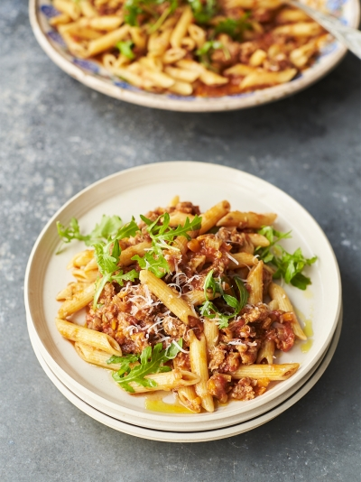
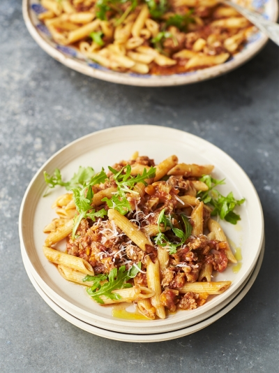
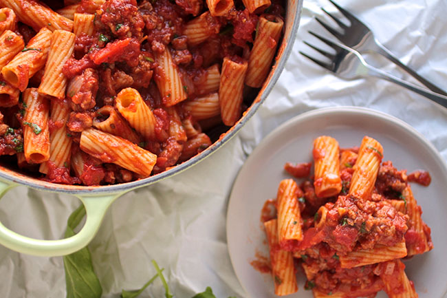

Sarah Millican's Tuscan sausage & tomato pasta
 

Ingredients
- 1 carrot
- 1 stick of celery
- olive oil
- 4 higher-welfare Italian sausages (250g in total)
- 1 heaped teaspoon fennel seeds
- 1 teaspoon dried oregano, ideally the flowering kind
- 1 pinch of dried chilli flakes
- 1 sprig of fresh rosemary
- 1 bunch of fresh basil (30g)
- 4 cloves of garlic
- 2 tablespoons balsamic vinegar
- 2 x 400 g tins of quality plum tomatoes
- 40 g Parmesan cheese, plus extra to serve
- extra virgin olive oil

Directions
Peel the onion, then finely chop with the carrot and celery.
Place a large pan on a medium-high heat with 2 tablespoons of olive oil and squeeze the sausagemeat out of
the skins into the pan, breaking it up with a wooden spoon as you go.Fry for a few minutes, then add the
fennel seeds, oregano and chilli flakes, and strip in the rosemary. Finely chop and add the basil stalks,
reserving the leaves for later.Add the chopped veg, then peel and finely grate
in the garlic. Cook for 10 minutes, or until softened. Pour over the balsamic vinegar and leave
to bubble away and reduce slightly. Scrunch in the tomatoes through your clean hands, then add
1 tin’s worth of water and the larger basil leaves. Bring to the boil, then simmer over a low heat for 20 minutes,
or until thickened. With around 10 minutes to go, cook the pasta in a pan of boiling salted water according to
the packet instructions, then drain, reserving a mugful of cooking water. Toss the drained pasta into the sausage pan, loosening with a
little reserved cooking water, if needed. Taste and season to perfection, then remove from the heat.Finely grate in the Parmesan,
scatter over the remaining basil leaves, and finish with a drizzle of extra virgin olive oil. Delicious served with pinches of lemony rocket and an
extra grating of Parmesan, if you like.
What I learned
- how to make a web page
- how to insert an image
- how to insert a paragraph
- how to insert a heading
- covert text into bold and/or italics
- how to insert an ordered and unordered list